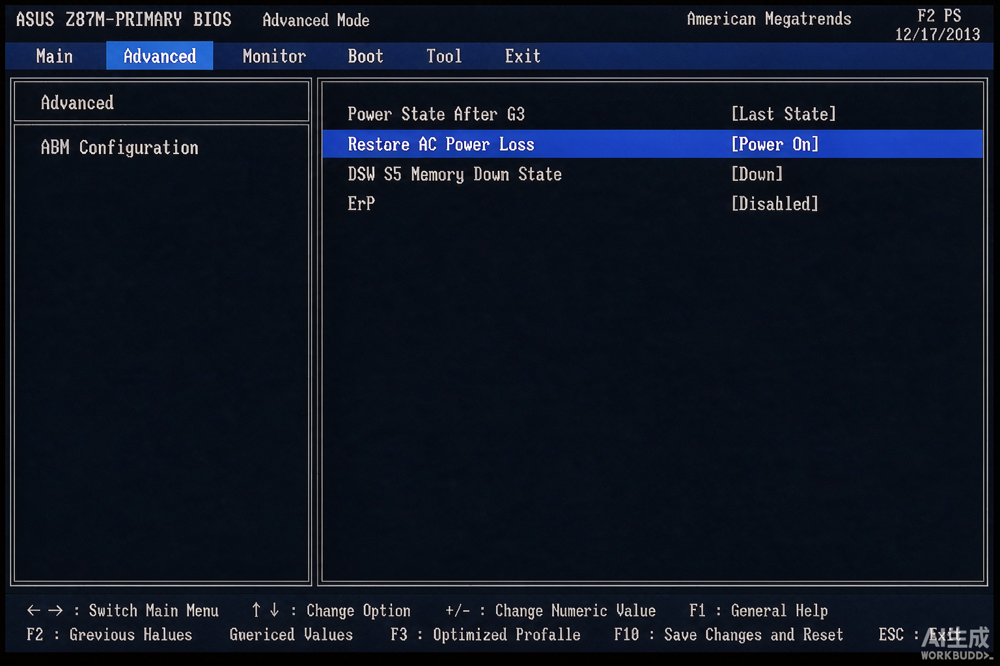
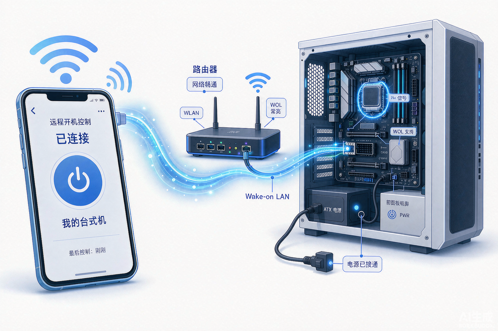

华硕主机板设置通电开机，实现远程控制
前言
很多场景需要电脑「来电自启」：远程办公要提前把家里/公司的电脑开起来、监控录像主机断电恢复后要自动开机、服务器机房来电后要自动恢复运行。其实不需要任何额外硬件，华硕主板的 BIOS 里就自带这个功能，设置一次即可永久生效。
这个功能对应的设置项就是——Restore AC Power Loss（断电恢复）。

图1：BIOS 中 Advanced → APM Configuration → Restore AC Power Loss 设置项
设置位置和操作步骤
具体路径：Advanced（高级） → APM Configuration（高级电源管理） → Restore AC Power Loss（断电恢复）
- 开机按 Del 或 F2 进入 BIOS（新版华硕主板可按 F7 在简易模式和高级模式之间切换）；
- 切换到 Advanced 标签页，找到 APM Configuration 回车进入；
- 将 Restore AC Power Loss 设为 Power On；
- 按 F10 保存并退出，重启一次让设置生效。
三个选项的含义
| 选项 | 含义 | 适用场景 |
|---|---|---|
| Power Off | 来电后保持关机（默认） | 普通家用电脑 |
| Power On | 来电后自动开机 | 远程控制、监控主机、服务器 ✅ |
| Last State | 来电后恢复断电前的状态 | 断电时是开机就开机，是关机就关机 |
配合远程控制的思路
通电自启只是第一步，真正的远程控制链路是：
智能插座（远程通电）→ 主板来电自启 → 系统自动登录 → 向日葵/ToDesk 等远程软件 → 手机/异地电脑接管
这样人在外面也能随时把家里或公司的电脑开起来，用完再通过智能插座彻底断电，省电又安全。

图2：远程开机控制链路示意——手机远程通电，主板来电自启，远程软件接管
两个容易踩的坑
- ERP Ready 要设为 Disabled：ERP 开启后主板待机功耗被压到极低，部分供电口会被切断，可能导致来电不自启、网络唤醒失效；
- Deep Sleep（深度睡眠）建议关闭：开启后 S4/S5 状态下网卡等设备完全断电，同样会影响自动开机和远程唤醒。
总结
一句话记住：Advanced → APM Configuration → Restore AC Power Loss → Power On，F10 保存。配合智能插座和远程控制软件，就能实现随时随地远程开机、远程操作，监控主机和办公电脑断电恢复后也能自动跑起来，不用人到场按电源键。
发布日期：2026-08-26
标签：#网络技术